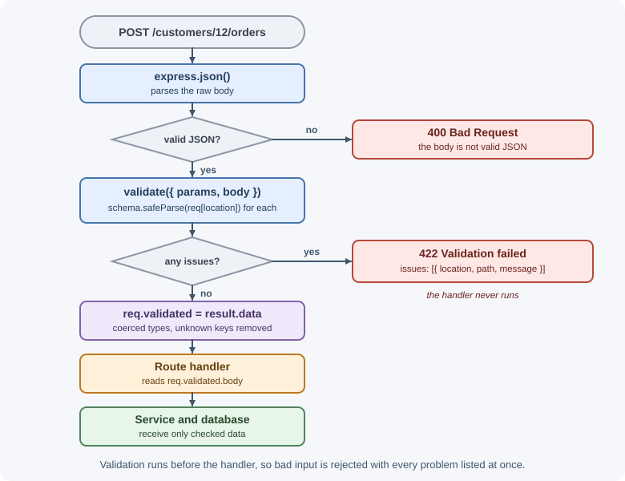
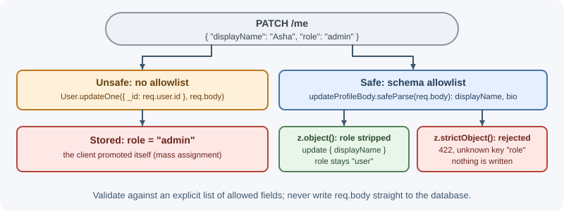

Request Validation¶
Request validation checks that incoming data has the shape, types, and values your code expects before any business logic runs. Express parses requests but does not validate them, so every API must add validation deliberately, usually as middleware built on a schema library.
Why it matters¶
Clients can send anything: missing fields, wrong types, huge strings, extra properties, or deliberately malicious values. Without validation, bad input reaches your database and business logic, causing crashes, corrupted data, and security problems such as injection or privilege escalation through extra fields. Good validation also gives clients clear, field-level error messages, which makes an API easier to use. The general principles are covered in validation and sanitization; this lesson shows how to apply them in Express.
Real-world usage¶
Large public APIs document their validation behavior, and they show both status-code conventions this lesson discusses:
- GitHub answers invalid JSON with
400 Bad Requestand the message "Problems parsing JSON". A well-formed request that fails validation gets422 Unprocessable Entitywith "Validation Failed" and anerrorsproperty whosecodevalues (such asmissing_fieldandinvalid) tell the client what to fix (GitHub REST API troubleshooting). - Stripe uses
400 Bad Requestwhen "the request was unacceptable, often due to missing a required parameter". Its error object includes aparamfield naming the parameter at fault, which Stripe suggests using "to display a message near the correct form field" (Stripe API errors). - Fastify builds validation into the framework with "a schema-based approach" and recommends JSON Schema for validating routes, instead of leaving it to add-on middleware (Fastify documentation).
Popular tools and providers: zod, joi, express-validator, and JSON Schema validators such as Ajv.
How it works¶
Never trust the client¶
Browser-side validation improves user experience, but anyone can bypass it
with curl, a script, or modified frontend code. The server is the only
place where validation actually protects your system.

What to validate¶
| Source | Examples | Notes |
|---|---|---|
req.params |
/users/:id |
Check format (integer, UUID, ObjectId) |
req.query |
?page=2&sort=name |
Always strings; coerce, set defaults, cap limits |
req.body |
JSON or form fields | Required fields, types, lengths, enums, formats |
| Headers | Idempotency-Key, X-Api-Version |
Validate any header your logic depends on |
| Files | Uploads | Size, type, count; see file uploads |
Validate syntax (is quantity an integer?) and semantics (is the
quantity between 1 and 99, and does the product exist?). Schema libraries
handle syntax and simple rules; checks that need the database, such as
"email already registered", happen in the service layer.
Validation compared with sanitization¶
- Validation decides whether input is acceptable and rejects it if not: "age must be an integer from 0 to 150".
- Sanitization transforms input into a safe or normalized form: trimming whitespace, lowercasing an email, removing unknown keys.
- Output encoding (escaping HTML when rendering) is a separate defense against XSS and happens when data is displayed, not when it is stored.
Prefer rejecting bad input over silently "fixing" it, except for harmless normalization such as trimming.
Manual checks versus schema libraries¶
Manual checks work for one field but grow quickly:
const { email, password } = req.body ?? {};
if (typeof email !== "string" || !email.includes("@")) { /* ... */ }
if (typeof password !== "string" || password.length < 12) { /* ... */ }
Schema libraries describe the whole shape once, produce typed results, and report every problem at once:
| Library | Style | Notes |
|---|---|---|
zod |
Schema objects in TypeScript-first style | Infers TypeScript types from schemas; widely used |
joi |
Chainable schema builder | Mature; popular in older Express codebases |
express-validator |
Express middleware chains per field | Built on validator.js; validates req directly |
Choosing 400 or 422¶
- 400 Bad Request means the server could not process the request because it is malformed.
- 422 Unprocessable Content means the request is well-formed (valid JSON, correct content type) but its content fails validation rules.
Both are used in real APIs. This guide uses a common convention:
- Unparseable bodies (invalid JSON) → 400.
- Well-formed requests that fail schema rules → 422.
Many APIs use 400 for both, which is also fine. What matters is choosing one convention, documenting it, and applying it everywhere. See HTTP status codes.
A useful error format¶
Return every problem at once, with the location and field, so clients can highlight form fields:
{
"error": "Validation failed",
"issues": [
{ "location": "body", "path": "email", "message": "Invalid email address" },
{ "location": "body", "path": "items.0.quantity", "message": "Must be at least 1" }
]
}
When to use and when not to use¶
Validate in middleware when the rule depends only on the request itself: types, required fields, lengths, formats, enums, and pagination caps.
Do not validate in middleware when the rule needs your data, such as "this email is already registered" or "this product exists". Those checks belong in the service layer, which returns 409 or 404, because they can change between validation and the write.
| Option | Choose it when | Trade-offs |
|---|---|---|
| Manual checks | One or two simple fields | Grows messy fast; easy to miss a case |
| zod | You want one schema that also produces TypeScript types, possibly shared with the frontend | Default error messages differ between major versions |
| joi | An existing codebase already uses it, or the team prefers its chainable style | A second way of describing data if the rest of the stack uses another schema library |
| express-validator | You prefer per-field middleware chains built on validator.js | Results include submitted values, so filter them before responding |
| JSON Schema (Ajv, Fastify schemas, OpenAPI validators) | The same schema must document the API and validate it | Verbose; separate from your TypeScript types unless generated |
Practical examples¶
A reusable zod validation middleware¶
// middleware/validate.js
export function validate(schemas) {
return (req, res, next) => {
const validated = {};
const issues = [];
for (const location of ["params", "query", "body"]) {
const schema = schemas[location];
if (!schema) continue;
const result = schema.safeParse(req[location] ?? {});
if (result.success) {
validated[location] = result.data;
} else {
for (const issue of result.error.issues) {
issues.push({ location, path: issue.path.join("."), message: issue.message });
}
}
}
if (issues.length > 0) {
return res.status(422).json({ error: "Validation failed", issues });
}
// Express 5: req.query is a read-only getter, so store results separately
req.validated = validated;
next();
};
}
Schemas for a create-order endpoint¶
// schemas/orders.js
import { z } from "zod";
export const orderParams = z.object({
customerId: z.string().regex(/^\d+$/, "customerId must be numeric"),
});
export const createOrderBody = z.object({
items: z.array(z.object({
productId: z.string().min(1),
quantity: z.number().int().min(1).max(99),
})).min(1, "At least one item is required"),
note: z.string().trim().max(500).optional(),
// A client-sent "status" or "totalPrice" is not in the schema,
// so z.object() strips it from the result
});
// routes/orders.js
import { Router } from "express";
import { validate } from "../middleware/validate.js";
import { orderParams, createOrderBody } from "../schemas/orders.js";
const router = Router({ mergeParams: true });
router.post("/", validate({ params: orderParams, body: createOrderBody }), (req, res) => {
const { customerId } = req.validated.params;
const { items, note } = req.validated.body; // only known, typed fields
res.status(201).json({ customerId, items, note });
});
export default router;
curl -X POST localhost:3000/customers/12/orders \
-H "Content-Type: application/json" \
-d '{"items":[{"productId":"p1","quantity":0}],"status":"paid"}'
# 422
# {"error":"Validation failed","issues":[{"location":"body",
# "path":"items.0.quantity","message":"Too small: expected number to be >=1"}]}
The exact message text depends on the zod version; you can pass custom messages to each rule.
Coercing query strings¶
Query values are strings, so convert them as part of validation:
export const listProductsQuery = z.object({
page: z.coerce.number().int().min(1).default(1),
limit: z.coerce.number().int().min(1).max(100).default(20),
sort: z.enum(["name", "price", "createdAt"]).default("createdAt"),
// Don't use z.coerce.boolean(): Boolean("false") is true
inStock: z.enum(["true", "false"]).transform((v) => v === "true").optional(),
});
router.get("/products", validate({ query: listProductsQuery }), (req, res) => {
const { page, limit, sort, inStock } = req.validated.query;
res.json({ page, limit, sort, inStock });
});
GET /products?limit=500 is rejected, GET /products gets the defaults,
and ?inStock=false correctly becomes false.
Stripping unknown fields and mass assignment¶
Mass assignment happens when code copies the whole request body into a database update:
// Dangerous: a client can send {"role":"admin"} and promote itself
await User.updateOne({ _id: req.user.id }, req.body);
Validate against an explicit allowlist instead. z.object() removes keys
that are not in the schema; z.strictObject() rejects requests that
contain them, which helps clients notice typos.

const updateProfileBody = z.strictObject({
displayName: z.string().trim().min(1).max(60).optional(),
bio: z.string().max(280).optional(),
});
The same idea with express-validator¶
import { body, validationResult } from "express-validator";
router.post(
"/signup",
body("email").isEmail().normalizeEmail(),
body("password").isLength({ min: 12 }),
(req, res) => {
const result = validationResult(req);
if (!result.isEmpty()) {
// result.array() also contains each submitted value (here, the
// password), so return only what the client needs
const issues = result.array().map(({ location, path, msg }) => ({ location, path, message: msg }));
return res.status(422).json({ error: "Validation failed", issues });
}
res.status(201).json({ email: req.body.email });
},
);
normalizeEmail() does more than lowercase: for Gmail addresses it also
removes dots, so Bob.Smith@GMAIL.com becomes bobsmith@gmail.com. Use
it only if you want that canonical form stored.
Validate configuration too¶
Environment variables are input as well. Validate them once at startup so a missing value fails immediately instead of during a request.
// config.js
import { z } from "zod";
const envSchema = z.object({
PORT: z.coerce.number().int().default(3000),
DATABASE_URL: z.string().min(1),
JWT_SECRET: z.string().min(32),
NODE_ENV: z.enum(["development", "test", "production"]).default("development"),
});
export const config = envSchema.parse(process.env); // throws with a clear list of problems
See configuration and secrets.
Sharing schemas with the frontend¶
Because zod schemas are plain JavaScript or TypeScript modules, a monorepo can put them in a shared package used by both the React form and the Express route. The frontend uses them for instant feedback; the backend still validates, because it cannot trust the client.
Best practices¶
- Validate every input source: params, query, body, relevant headers, and files.
- Validate as early as possible, in middleware before the handler.
- Use allowlists (known fields and values) rather than denylists.
- Coerce and default query parameters, and cap pagination limits.
- Return all validation issues at once with field paths.
- Pick one status-code convention (400 or 422) and document it.
- Keep database-dependent checks (uniqueness, existence) in the service layer and return 409 or 404 as appropriate.
- Never pass
req.bodydirectly into a database update.
In production¶
- A user promotes themselves to admin. Symptom: accounts with roles
nobody granted. Detect: audit logs show
rolechanging through a profile-update endpoint. Cause: mass assignment: the endpoint copiedreq.bodyinto the update. Fix: validate against an allowlist schema and update only named fields; backfill and review affected accounts. - A wave of 422s right after a frontend release. Symptom: forms fail
for every user. Detect: a spike in 422 responses on one route, all with
the same
unrecognized_keysor missing-field issue. Cause: the frontend started sending or renaming a field that a strict schema rejects. Fix: deploy schema changes before client changes, and accept new optional fields first. - Slow queries from huge page sizes. Symptom: database CPU spikes and
timeouts on list endpoints. Detect: slow-query logs with very large
LIMITvalues. Cause:?limit=100000was accepted. Fix: caplimitin the schema (for example.max(100)). - Filters silently ignore "false". Symptom: users filtering for
out-of-stock items still see in-stock ones. Detect: logs show
inStock: truefor requests sent with?inStock=false. Cause:Boolean("false")orz.coerce.boolean(), which treat any non-empty string astrue. Fix: parse"true"/"false"explicitly. - Passwords appear in error responses and logs. Symptom: a security
review finds submitted secrets in logs. Detect: log searches for
password fields inside validation errors. Cause: returning or logging
raw validator output, such as express-validator's
result.array(), which includes each submittedvalue. Fix: map issues to location, path, and message only.
Important terminology¶
- Validation: Checking input against rules and rejecting it if it fails.
- Sanitization: Transforming input into a normalized or safe form.
- Schema: A declarative description of valid data.
- Coercion: Converting a value from one type to another, such as the
string
"2"to the number2. - Allowlist: An explicit list of permitted fields or values.
- Mass assignment: Accidentally letting clients set fields they should not control by copying request data wholesale.
- 422 Unprocessable Content: A status for well-formed requests whose content is invalid.
Common mistakes and misconceptions¶
- Relying on frontend validation alone.
- Using
z.coerce.boolean()orBoolean(value)on query strings, which turns"false"intotrue. - Validating the body but forgetting params and query.
- Returning only the first error, forcing clients to fix problems one at a time.
- Trying to overwrite
req.querywith validated data in Express 5. - Thinking validation prevents every injection; queries must still be parameterized and output must still be encoded.
- Leaking internal details (stack traces, SQL) in validation responses.
Revision questions¶
- Why must validation happen on the server even when the frontend validates?
- What is the difference between validation and sanitization?
- How would you validate and coerce
?page=2&limit=50? - What is mass assignment, and how does a schema prevent it?
- When would you return 400, and when 422, under the convention in this lesson?
- Why is validating environment variables at startup useful?